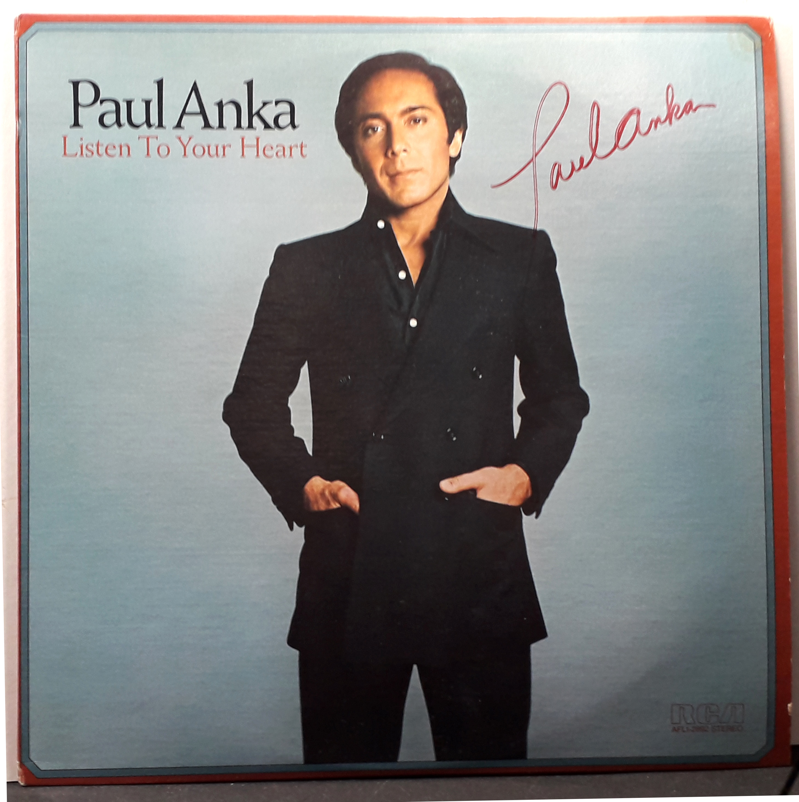

Product No. HEA-0319
$140
Shipping: $8.95
Description
Signed LP Album - Listen To Your Heart
Full Description
Paul Anka (born July 30, 1941) is a Canadian-American singer, songwriter, and actor who became one of the biggest teen idols of the late 1950s and early 1960s. Born in Ottawa, Ontario, he achieved international fame while still a teenager with his 1957 hit “Diana,” which he wrote himself. Anka went on to record a long string of popular songs, including “Lonely Boy,” “Put Your Head on My Shoulder,” “Puppy Love,” and “You’re Having My Baby.” He also became a highly successful songwriter for other performers. He wrote the English lyrics to “My Way,” famously recorded by Frank Sinatra, and composed “She’s a Lady,” which became a major hit for Tom Jones. He also wrote the theme music associated with *The Tonight Show Starring Johnny Carson*. In addition to recording and songwriting, Anka appeared in films and television and became a successful Las Vegas and nightclub performer. His career has lasted more than six decades, and he is regarded as one of the most successful singer-songwriters to emerge from the early rock-and-roll era.
Condition
Excellent condition